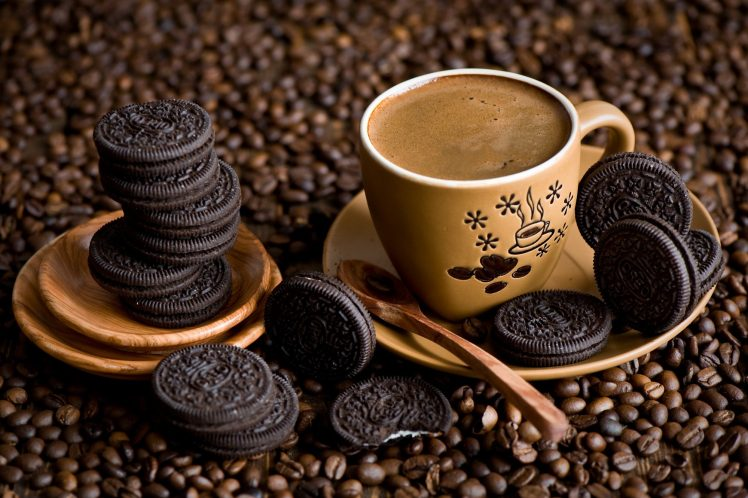

🎟 رویدادهای کافه
ورکشاپ دمآوری، شب موسیقی آکوستیک و Coffee Tasting.
مشاهده رویدادهایک تجربه کامل دیجیتال برای انتخاب، سفارش، رزرو و کشف طعمهای تازه؛ از میز کافه تا سفارش بیرونبر.

ورکشاپ دمآوری، شب موسیقی آکوستیک و Coffee Tasting.
مشاهده رویدادهایک تجربه خوشطعم را برای دوستت هدیه کن.
ساخت Gift Cardداستان دانهها، روشهای دمآوری و راهنمای انتخاب.
مطالعه Blog